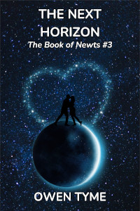

The Next Horizon
The Next Horizon is volume three of The Book of Newts, which follows the adventures and trials of a witch that owns a magical book detailing many secrets of science, engineering, magic and most particularly, space travel.

After settling matters related to the pirate queen, Amelia and her sisters enjoy a short time of peace, until she decides to go home, to Cakana. She wants to reconnect with a man she fell in love with, but The Book of Newts has other plans.When the conflict comes to a head, The Book refuses to cooperate and takes back the gifts it’s been quietly imparting. As a result, Amelia discovers it’s been bolstering her exceptional ability with mathematics and piloting. Left to her own devices, the task of navigating space becomes potentially deadly, because she can no longer perform the required calculations in her head, or on paper.
Without that, the journey home will take nine months, rather than mere days, practically ensuring the man she loves will have moved on.
Meanwhile, a duo of deadly witches they left behind, and hoped never to see again, have since learned to fly through space and wish for a helping of revenge. Lieutenant Colonel Scarth Denholm is furious with Amelia for betraying her and she’s got Captain Kristina “Killer” Krauss with her. Worse, they’re welcomed into space by one of the last pirates, Captain Edwina “Roaring” Rowley, who also has a bone to pick with Amelia and her sisters.
Will Amelia survive long enough to reignite the love she once had, or will she be forced to give up her greatest desire, just to satisfy The Book?
Bonus Content: Rowley’s Roar
Rowley’s Roar is a musical album based on this series, telling parts of the story in song, from the perspective of the pirate, “Roaring” Rowley.
The songs that are most relevant to this volume are Twinkle and Spin, The Tiger Witch and Waiting in the Void, which are tracks 1, 13, and 14.
Twinkle and Spin is the song Rowley sings for Lieutenant Colonel Denholm and Captain Krauss in chapter 5. The Tiger Witch is in reference to Denholm’s mental state throughout the novel, but very specifically the events of chapter 27. Waiting in the Void covers the final state of Rowley, which isn’t covered in the novel, very slightly extending the story to the space between volumes, serving as a little hint of things to come. Beware of spoilers for the story in both The Tiger Witch and Waiting in the Void.
Release Schedule and Details
The first chapter was published to Royal Road on Monday, August 4, 2025 and the last on November 19, 2025.
Looking For More?
The next volume in The Book of Newts is Rowley’s Ride.